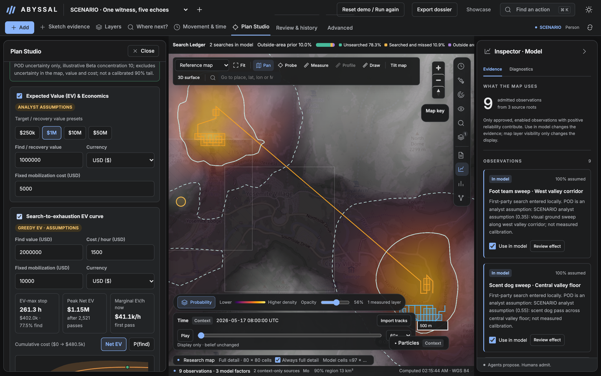

ABYSSAL
A local-first probabilistic workbench for search under imperfect detection, uncertain provenance, and explicit assumptions.
ABYSSAL began with a simple question: if you've looked for something and failed to find it, what have you actually learned?
Over rapid iteration it has grown into a full spatial reasoning workstation: a double-precision log-space Bayesian engine, provenance-root pooling that refuses to count echoes twice, an Evidence Map measuring whole-source counterfactual influence in bits, multi-asset Plan Studio economics with search-to-exhaustion stopping curves, a multi-target Dark-Fleet Watchlist, and a 17-tool Ops Console spanning live air/sea traffic, orbit detection, track-gap reachability ellipses, leeway drift Monte Carlo, shadow chronolocation, 3D terrain, and a 30-day NASA satellite time-machine.

Read the ABYSSAL Series →
Explore the full architecture, mathematics, thought experiments, UI walkthroughs, and honest limits across six standalone essays.
Honest scope: ABYSSAL runs locally on one machine and is backed by over 2,500 automated tests, but it has not yet been independently validated against real operational search outcomes. All detection rates, valuations, and scenario tracks are explicitly labelled as analyst assumptions or SCENARIO simulations.